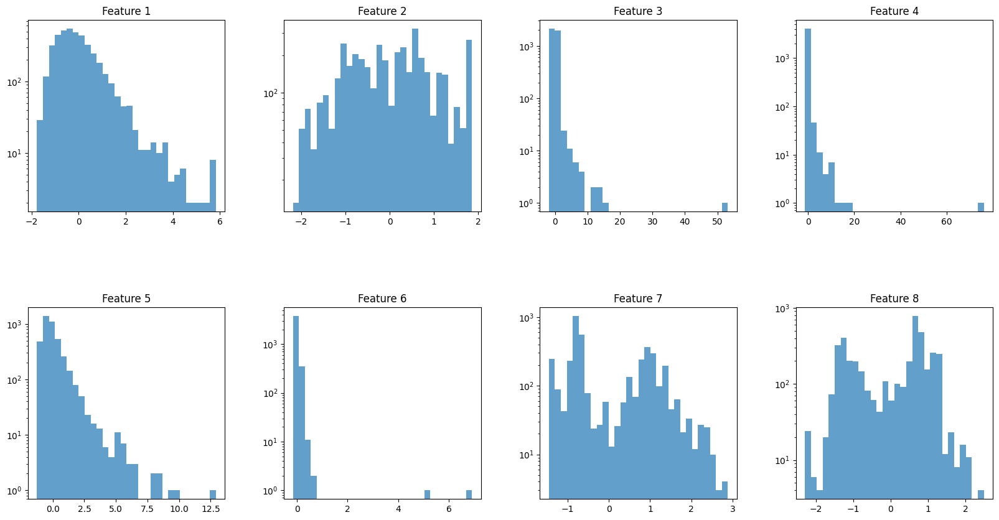
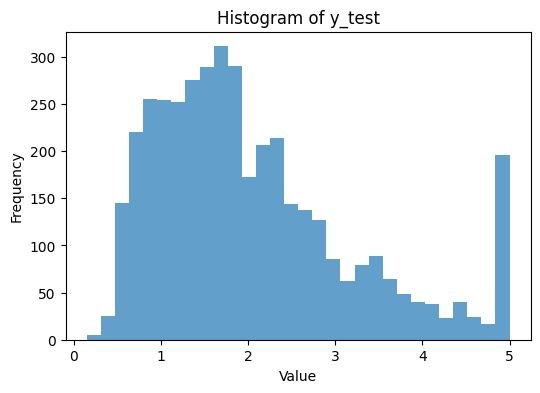

Assignment 3
Contents
Assignment 3#
%pip install pymc pytensor
Requirement already satisfied: pymc in /usr/local/lib/python3.10/dist-packages (5.10.4)
Requirement already satisfied: pytensor in /usr/local/lib/python3.10/dist-packages (2.18.6)
Requirement already satisfied: arviz>=0.13.0 in /usr/local/lib/python3.10/dist-packages (from pymc) (0.15.1)
Requirement already satisfied: cachetools>=4.2.1 in /usr/local/lib/python3.10/dist-packages (from pymc) (5.3.3)
Requirement already satisfied: cloudpickle in /usr/local/lib/python3.10/dist-packages (from pymc) (2.2.1)
Requirement already satisfied: fastprogress>=0.2.0 in /usr/local/lib/python3.10/dist-packages (from pymc) (1.0.3)
Requirement already satisfied: numpy>=1.15.0 in /usr/local/lib/python3.10/dist-packages (from pymc) (1.25.2)
Requirement already satisfied: pandas>=0.24.0 in /usr/local/lib/python3.10/dist-packages (from pymc) (2.0.3)
Requirement already satisfied: scipy>=1.4.1 in /usr/local/lib/python3.10/dist-packages (from pymc) (1.11.4)
Requirement already satisfied: typing-extensions>=3.7.4 in /usr/local/lib/python3.10/dist-packages (from pymc) (4.11.0)
Requirement already satisfied: setuptools>=48.0.0 in /usr/local/lib/python3.10/dist-packages (from pytensor) (67.7.2)
Requirement already satisfied: filelock in /usr/local/lib/python3.10/dist-packages (from pytensor) (3.13.4)
Requirement already satisfied: etuples in /usr/local/lib/python3.10/dist-packages (from pytensor) (0.3.9)
Requirement already satisfied: logical-unification in /usr/local/lib/python3.10/dist-packages (from pytensor) (0.4.6)
Requirement already satisfied: miniKanren in /usr/local/lib/python3.10/dist-packages (from pytensor) (1.0.3)
Requirement already satisfied: cons in /usr/local/lib/python3.10/dist-packages (from pytensor) (0.4.6)
Requirement already satisfied: matplotlib>=3.2 in /usr/local/lib/python3.10/dist-packages (from arviz>=0.13.0->pymc) (3.7.1)
Requirement already satisfied: packaging in /usr/local/lib/python3.10/dist-packages (from arviz>=0.13.0->pymc) (24.0)
Requirement already satisfied: xarray>=0.21.0 in /usr/local/lib/python3.10/dist-packages (from arviz>=0.13.0->pymc) (2023.7.0)
Requirement already satisfied: h5netcdf>=1.0.2 in /usr/local/lib/python3.10/dist-packages (from arviz>=0.13.0->pymc) (1.3.0)
Requirement already satisfied: xarray-einstats>=0.3 in /usr/local/lib/python3.10/dist-packages (from arviz>=0.13.0->pymc) (0.7.0)
Requirement already satisfied: python-dateutil>=2.8.2 in /usr/local/lib/python3.10/dist-packages (from pandas>=0.24.0->pymc) (2.8.2)
Requirement already satisfied: pytz>=2020.1 in /usr/local/lib/python3.10/dist-packages (from pandas>=0.24.0->pymc) (2023.4)
Requirement already satisfied: tzdata>=2022.1 in /usr/local/lib/python3.10/dist-packages (from pandas>=0.24.0->pymc) (2024.1)
Requirement already satisfied: toolz in /usr/local/lib/python3.10/dist-packages (from logical-unification->pytensor) (0.12.1)
Requirement already satisfied: multipledispatch in /usr/local/lib/python3.10/dist-packages (from logical-unification->pytensor) (1.0.0)
Requirement already satisfied: h5py in /usr/local/lib/python3.10/dist-packages (from h5netcdf>=1.0.2->arviz>=0.13.0->pymc) (3.9.0)
Requirement already satisfied: contourpy>=1.0.1 in /usr/local/lib/python3.10/dist-packages (from matplotlib>=3.2->arviz>=0.13.0->pymc) (1.2.1)
Requirement already satisfied: cycler>=0.10 in /usr/local/lib/python3.10/dist-packages (from matplotlib>=3.2->arviz>=0.13.0->pymc) (0.12.1)
Requirement already satisfied: fonttools>=4.22.0 in /usr/local/lib/python3.10/dist-packages (from matplotlib>=3.2->arviz>=0.13.0->pymc) (4.51.0)
Requirement already satisfied: kiwisolver>=1.0.1 in /usr/local/lib/python3.10/dist-packages (from matplotlib>=3.2->arviz>=0.13.0->pymc) (1.4.5)
Requirement already satisfied: pillow>=6.2.0 in /usr/local/lib/python3.10/dist-packages (from matplotlib>=3.2->arviz>=0.13.0->pymc) (9.4.0)
Requirement already satisfied: pyparsing>=2.3.1 in /usr/local/lib/python3.10/dist-packages (from matplotlib>=3.2->arviz>=0.13.0->pymc) (3.1.2)
Requirement already satisfied: six>=1.5 in /usr/local/lib/python3.10/dist-packages (from python-dateutil>=2.8.2->pandas>=0.24.0->pymc) (1.16.0)
import pymc as pm
import numpy as np
import pandas as pd
from sklearn.datasets import fetch_california_housing
from sklearn.model_selection import train_test_split
from sklearn.linear_model import LinearRegression #for standard linear regression
from sklearn.metrics import mean_squared_error
from sklearn.preprocessing import StandardScaler
California Housing Dataset#
# Load California housing data
housing = fetch_california_housing()
X, y = housing.data, housing.target
housing
{'data': array([[ 8.3252 , 41. , 6.98412698, ..., 2.55555556,
37.88 , -122.23 ],
[ 8.3014 , 21. , 6.23813708, ..., 2.10984183,
37.86 , -122.22 ],
[ 7.2574 , 52. , 8.28813559, ..., 2.80225989,
37.85 , -122.24 ],
...,
[ 1.7 , 17. , 5.20554273, ..., 2.3256351 ,
39.43 , -121.22 ],
[ 1.8672 , 18. , 5.32951289, ..., 2.12320917,
39.43 , -121.32 ],
[ 2.3886 , 16. , 5.25471698, ..., 2.61698113,
39.37 , -121.24 ]]),
'target': array([4.526, 3.585, 3.521, ..., 0.923, 0.847, 0.894]),
'frame': None,
'target_names': ['MedHouseVal'],
'feature_names': ['MedInc',
'HouseAge',
'AveRooms',
'AveBedrms',
'Population',
'AveOccup',
'Latitude',
'Longitude'],
'DESCR': '.. _california_housing_dataset:\n\nCalifornia Housing dataset\n--------------------------\n\n**Data Set Characteristics:**\n\n :Number of Instances: 20640\n\n :Number of Attributes: 8 numeric, predictive attributes and the target\n\n :Attribute Information:\n - MedInc median income in block group\n - HouseAge median house age in block group\n - AveRooms average number of rooms per household\n - AveBedrms average number of bedrooms per household\n - Population block group population\n - AveOccup average number of household members\n - Latitude block group latitude\n - Longitude block group longitude\n\n :Missing Attribute Values: None\n\nThis dataset was obtained from the StatLib repository.\nhttps://www.dcc.fc.up.pt/~ltorgo/Regression/cal_housing.html\n\nThe target variable is the median house value for California districts,\nexpressed in hundreds of thousands of dollars ($100,000).\n\nThis dataset was derived from the 1990 U.S. census, using one row per census\nblock group. A block group is the smallest geographical unit for which the U.S.\nCensus Bureau publishes sample data (a block group typically has a population\nof 600 to 3,000 people).\n\nA household is a group of people residing within a home. Since the average\nnumber of rooms and bedrooms in this dataset are provided per household, these\ncolumns may take surprisingly large values for block groups with few households\nand many empty houses, such as vacation resorts.\n\nIt can be downloaded/loaded using the\n:func:`sklearn.datasets.fetch_california_housing` function.\n\n.. topic:: References\n\n - Pace, R. Kelley and Ronald Barry, Sparse Spatial Autoregressions,\n Statistics and Probability Letters, 33 (1997) 291-297\n'}
# Split the data into training and test sets
X_train, X_test, y_train, y_test = train_test_split(X, y, test_size=0.2, random_state=42)
# Standardize the features
scaler = StandardScaler()
X_train_scaled = scaler.fit_transform(X_train)
X_test_scaled = scaler.transform(X_test)
#X_train_scaled = X_train
#X_test_scaled = X_test
print(np.shape(X_test))
(4128, 8)
import matplotlib.pyplot as plt
# Assuming X_test is defined and has the shape (4128, 8)
# Set up the matplotlib figure
fig, axs = plt.subplots(nrows=2, ncols=4, figsize=(20, 10)) # Adjust size as needed
fig.subplots_adjust(hspace=0.5, wspace=0.3) # Adjust spacing between plots as needed
# Iterate over all features (columns) in X_test
for i in range(8):
# Determine the position of the subplot
row = i // 4
col = i % 4
ax = axs[row, col]
# Plot the histogram for the i-th feature
ax.hist(X_test_scaled[:, i], bins=30, alpha=0.7, log=True)
ax.set_title(f'Feature {i+1}')
# Display the plot
plt.show()

# Plotting the histogram for y_test
plt.figure(figsize=(6, 4)) # Adjust figure size as needed
plt.hist(y_test.ravel(), bins=30, alpha=0.7) # Use .ravel() to flatten y_test to 1D
plt.title('Histogram of y_test')
plt.xlabel('Value')
plt.ylabel('Frequency')
plt.show()

Linear Regression#
# Initialize and train a linear regression model on the scaled data
lin_reg = LinearRegression()
lin_reg.fit(X_train_scaled, y_train)
# Predict on the scaled training set and the scaled test set
y_train_pred = lin_reg.predict(X_train_scaled)
y_test_pred = lin_reg.predict(X_test_scaled)
# Evaluate the model
train_mse = mean_squared_error(y_train, y_train_pred)
test_mse = mean_squared_error(y_test, y_test_pred)
print(f'Training Mean Squared Error: {train_mse:.4f}')
print(f'Test Mean Squared Error: {test_mse:.4f}')
# Coefficients and Intercept
print('Intercept:', lin_reg.intercept_)
print('Coefficients:', lin_reg.coef_)
Training Mean Squared Error: 0.5179
Test Mean Squared Error: 0.5559
Intercept: 2.071946937378619
Coefficients: [ 0.85438303 0.12254624 -0.29441013 0.33925949 -0.00230772 -0.0408291
-0.89692888 -0.86984178]
# without scaling
#Training Mean Squared Error: 0.5179
#Test Mean Squared Error: 0.5559
#Intercept: -37.02327770606391
#Coefficients: [ 4.48674910e-01 9.72425752e-03 -1.23323343e-01 7.83144907e-01 -2.02962058e-06 -3.52631849e-03 -4.19792487e-01 -4.33708065e-01]
Bayesian Linear Regression with PyMC#
# Define the model
with pm.Model() as model_lin:
# Priors for unknown model parameters
alpha = pm.Normal('alpha', mu=0, sigma=10)
beta = pm.Normal('beta', mu=0, sigma=10, shape=X_train.shape[1])
sigma = pm.HalfNormal('sigma', sigma=1)
# Expected value of outcome
mu = alpha + pm.math.dot(X_train_scaled, beta)
# Likelihood (sampling distribution) of observations
Y_obs = pm.Normal('Y_obs', mu=mu, sigma=sigma, observed=y_train)
# Sample from the posterior
idata_lin = pm.sample(500, chains=2) # lengthy: use burn-in of 1000 and 1000 draws for 1 chain
100.00% [1500/1500 00:15<00:00 Sampling chain 0, 0 divergences]
100.00% [1500/1500 00:14<00:00 Sampling chain 1, 0 divergences]
import arviz as az
az.plot_trace(idata_lin)
/usr/local/lib/python3.10/dist-packages/arviz/utils.py:184: NumbaDeprecationWarning: The 'nopython' keyword argument was not supplied to the 'numba.jit' decorator. The implicit default value for this argument is currently False, but it will be changed to True in Numba 0.59.0. See https://numba.readthedocs.io/en/stable/reference/deprecation.html#deprecation-of-object-mode-fall-back-behaviour-when-using-jit for details.
numba_fn = numba.jit(**self.kwargs)(self.function)
array([[<Axes: title={'center': 'alpha'}>,
<Axes: title={'center': 'alpha'}>],
[<Axes: title={'center': 'beta'}>,
<Axes: title={'center': 'beta'}>],
[<Axes: title={'center': 'sigma'}>,
<Axes: title={'center': 'sigma'}>]], dtype=object)
pos_alpha = idata_lin.posterior['alpha'].mean(axis=0).values
pos_betas = idata_lin.posterior['beta'].mean(axis=0).values
#print(np.shape(pos_alpha))
print(np.shape(pos_betas))
#pos_alpha = pos_alpha.reshape((np.shape(pos_alpha)[1],))
#pos_betas = pos_betas.reshape((np.shape(pos_betas)[1],np.shape(pos_betas)[2]))
(500, 8)
pos_y_test = pos_alpha[:, np.newaxis] + np.dot(pos_betas, X_test_scaled.T)
pos_y_train = pos_alpha[:, np.newaxis] + np.dot(pos_betas, X_train_scaled.T)
print(np.shape(pos_y_test), type(pos_y_test))
pos_y_test_mean = np.mean(pos_y_test, axis=0)
pos_y_train_mean = np.mean(pos_y_train, axis=0)
print(np.shape(pos_y_test_mean))
pos_y_test_lower = np.percentile(pos_y_test,3, axis=0)
pos_y_test_upper = np.percentile(pos_y_test,97, axis=0)
pos_y_train_lower = np.percentile(pos_y_train,3, axis=0)
pos_y_train_upper = np.percentile(pos_y_train,97, axis=0)
print(np.shape(pos_y_test_lower))
for i in range(len(y_test)):
if(i%50==0):
print(f"true: {y_test[i]:1.4f}, y_test_pred: {y_test_pred[i]:1.4f}, Bayes mean: {pos_y_test_mean[i]:1.4f}, range: ({pos_y_test_lower[i]:1.4f}, {pos_y_test_upper[i]:1.4f})")
(500, 4128) <class 'numpy.ndarray'>
(4128,)
(4128,)
true: 0.4770, y_test_pred: 0.7191, Bayes mean: 0.7192, range: (0.7056, 0.7333)
true: 2.5190, y_test_pred: 2.4037, Bayes mean: 2.4044, range: (2.3864, 2.4241)
true: 0.9970, y_test_pred: 1.5178, Bayes mean: 1.5171, range: (1.4989, 1.5334)
true: 1.6880, y_test_pred: 1.5097, Bayes mean: 1.5094, range: (1.4917, 1.5262)
true: 2.9790, y_test_pred: 2.3937, Bayes mean: 2.3947, range: (2.3705, 2.4199)
true: 2.2500, y_test_pred: 1.0502, Bayes mean: 1.0507, range: (1.0369, 1.0658)
true: 0.8690, y_test_pred: 0.6687, Bayes mean: 0.6687, range: (0.6496, 0.6863)
true: 1.6250, y_test_pred: 1.4168, Bayes mean: 1.4169, range: (1.3918, 1.4403)
true: 3.7000, y_test_pred: 2.5336, Bayes mean: 2.5345, range: (2.5154, 2.5534)
true: 3.9550, y_test_pred: 2.8634, Bayes mean: 2.8643, range: (2.8492, 2.8807)
true: 1.1940, y_test_pred: 2.2113, Bayes mean: 2.2122, range: (2.1932, 2.2312)
true: 0.9180, y_test_pred: 0.9937, Bayes mean: 0.9933, range: (0.9728, 1.0148)
true: 0.8550, y_test_pred: 1.4220, Bayes mean: 1.4222, range: (1.4091, 1.4371)
true: 0.8750, y_test_pred: 1.1735, Bayes mean: 1.1736, range: (1.1559, 1.1900)
true: 1.0140, y_test_pred: 1.9858, Bayes mean: 1.9869, range: (1.9692, 2.0041)
true: 1.0380, y_test_pred: 0.7142, Bayes mean: 0.7145, range: (0.6912, 0.7364)
true: 0.8750, y_test_pred: 0.9356, Bayes mean: 0.9361, range: (0.9145, 0.9565)
true: 2.6880, y_test_pred: 1.5730, Bayes mean: 1.5736, range: (1.5563, 1.5935)
true: 2.1710, y_test_pred: 2.6333, Bayes mean: 2.6332, range: (2.6213, 2.6446)
true: 3.7960, y_test_pred: 3.3560, Bayes mean: 3.3566, range: (3.3402, 3.3744)
true: 1.7050, y_test_pred: 2.0999, Bayes mean: 2.0998, range: (2.0892, 2.1097)
true: 1.3520, y_test_pred: 1.8346, Bayes mean: 1.8346, range: (1.8176, 1.8521)
true: 0.7820, y_test_pred: 1.1454, Bayes mean: 1.1463, range: (1.1297, 1.1636)
true: 5.0000, y_test_pred: 4.8032, Bayes mean: 4.8028, range: (4.7768, 4.8269)
true: 1.8160, y_test_pred: 1.5665, Bayes mean: 1.5668, range: (1.5407, 1.5932)
true: 0.6750, y_test_pred: 4.2362, Bayes mean: 4.2352, range: (4.1955, 4.2745)
true: 4.5340, y_test_pred: 2.0385, Bayes mean: 2.0385, range: (2.0266, 2.0500)
true: 1.6630, y_test_pred: 1.5520, Bayes mean: 1.5520, range: (1.5380, 1.5659)
true: 4.0000, y_test_pred: 1.2078, Bayes mean: 1.2074, range: (1.1843, 1.2315)
true: 0.9710, y_test_pred: 1.6035, Bayes mean: 1.6035, range: (1.5882, 1.6183)
true: 1.9640, y_test_pred: 1.9321, Bayes mean: 1.9330, range: (1.9074, 1.9567)
true: 1.5500, y_test_pred: 1.6540, Bayes mean: 1.6537, range: (1.6411, 1.6665)
true: 3.2290, y_test_pred: 2.5838, Bayes mean: 2.5835, range: (2.5686, 2.5980)
true: 2.7500, y_test_pred: 2.4022, Bayes mean: 2.4034, range: (2.3725, 2.4339)
true: 2.6650, y_test_pred: 2.6450, Bayes mean: 2.6461, range: (2.6251, 2.6655)
true: 2.9090, y_test_pred: 2.9621, Bayes mean: 2.9629, range: (2.9492, 2.9775)
true: 2.5590, y_test_pred: 2.6647, Bayes mean: 2.6644, range: (2.6524, 2.6761)
true: 1.8460, y_test_pred: 2.1881, Bayes mean: 2.1879, range: (2.1776, 2.1978)
true: 2.3020, y_test_pred: 2.2026, Bayes mean: 2.2024, range: (2.1903, 2.2135)
true: 2.1230, y_test_pred: 2.7611, Bayes mean: 2.7610, range: (2.7498, 2.7716)
true: 1.3250, y_test_pred: 2.0046, Bayes mean: 2.0038, range: (1.9837, 2.0251)
true: 3.3850, y_test_pred: 3.1471, Bayes mean: 3.1471, range: (3.1338, 3.1594)
true: 1.3540, y_test_pred: 0.9452, Bayes mean: 0.9448, range: (0.9257, 0.9649)
true: 0.6500, y_test_pred: 1.0731, Bayes mean: 1.0734, range: (1.0596, 1.0873)
true: 1.7810, y_test_pred: 2.0241, Bayes mean: 2.0254, range: (2.0025, 2.0481)
true: 5.0000, y_test_pred: 2.4118, Bayes mean: 2.4119, range: (2.3903, 2.4331)
true: 1.8750, y_test_pred: 1.6802, Bayes mean: 1.6800, range: (1.6652, 1.6956)
true: 2.6470, y_test_pred: 3.1414, Bayes mean: 3.1418, range: (3.1264, 3.1595)
true: 0.9730, y_test_pred: 1.4824, Bayes mean: 1.4834, range: (1.4644, 1.5032)
true: 1.8660, y_test_pred: 2.2120, Bayes mean: 2.2120, range: (2.1977, 2.2259)
true: 0.6090, y_test_pred: 1.2696, Bayes mean: 1.2701, range: (1.2526, 1.2888)
true: 1.1190, y_test_pred: 2.3738, Bayes mean: 2.3737, range: (2.3623, 2.3850)
true: 2.9730, y_test_pred: 2.7551, Bayes mean: 2.7550, range: (2.7386, 2.7703)
true: 1.4460, y_test_pred: 1.7705, Bayes mean: 1.7702, range: (1.7571, 1.7836)
true: 5.0000, y_test_pred: 3.1743, Bayes mean: 3.1751, range: (3.1566, 3.1949)
true: 2.1250, y_test_pred: 1.7385, Bayes mean: 1.7396, range: (1.7185, 1.7622)
true: 2.3640, y_test_pred: 2.1866, Bayes mean: 2.1865, range: (2.1741, 2.1978)
true: 1.9060, y_test_pred: 1.6092, Bayes mean: 1.6093, range: (1.5949, 1.6235)
true: 2.1480, y_test_pred: 2.7028, Bayes mean: 2.7029, range: (2.6847, 2.7205)
true: 2.6600, y_test_pred: 2.3851, Bayes mean: 2.3851, range: (2.3723, 2.3970)
true: 2.0510, y_test_pred: 2.0705, Bayes mean: 2.0704, range: (2.0559, 2.0847)
true: 1.5910, y_test_pred: 1.7752, Bayes mean: 1.7748, range: (1.7594, 1.7902)
true: 2.2230, y_test_pred: 2.2463, Bayes mean: 2.2462, range: (2.2276, 2.2654)
true: 1.1250, y_test_pred: 1.4475, Bayes mean: 1.4476, range: (1.4340, 1.4627)
true: 2.2680, y_test_pred: 2.4799, Bayes mean: 2.4801, range: (2.4542, 2.5053)
true: 1.5520, y_test_pred: 1.9872, Bayes mean: 1.9880, range: (1.9736, 2.0036)
true: 1.8860, y_test_pred: 2.5150, Bayes mean: 2.5149, range: (2.4976, 2.5305)
true: 2.7050, y_test_pred: 2.8794, Bayes mean: 2.8790, range: (2.8621, 2.8945)
true: 1.7670, y_test_pred: 1.6917, Bayes mean: 1.6916, range: (1.6769, 1.7060)
true: 1.7130, y_test_pred: 1.5525, Bayes mean: 1.5533, range: (1.5355, 1.5716)
true: 5.0000, y_test_pred: 4.6456, Bayes mean: 4.6458, range: (4.6232, 4.6700)
true: 1.7730, y_test_pred: 2.3504, Bayes mean: 2.3503, range: (2.3366, 2.3643)
true: 1.5230, y_test_pred: 1.7014, Bayes mean: 1.7009, range: (1.6831, 1.7168)
true: 2.4710, y_test_pred: 1.9083, Bayes mean: 1.9080, range: (1.8960, 1.9195)
true: 1.5180, y_test_pred: 1.9192, Bayes mean: 1.9190, range: (1.9039, 1.9338)
true: 1.4430, y_test_pred: 1.6407, Bayes mean: 1.6405, range: (1.6245, 1.6552)
true: 2.6470, y_test_pred: 1.7796, Bayes mean: 1.7796, range: (1.7681, 1.7908)
true: 2.3220, y_test_pred: 3.0174, Bayes mean: 3.0183, range: (2.9995, 3.0383)
true: 1.4440, y_test_pred: 1.6099, Bayes mean: 1.6105, range: (1.5946, 1.6264)
true: 2.8880, y_test_pred: 3.2436, Bayes mean: 3.2433, range: (3.2268, 3.2609)
true: 4.3670, y_test_pred: 2.6613, Bayes mean: 2.6619, range: (2.6449, 2.6783)
true: 1.9630, y_test_pred: 1.6718, Bayes mean: 1.6716, range: (1.6594, 1.6849)
true: 0.5940, y_test_pred: 1.1509, Bayes mean: 1.1515, range: (1.1386, 1.1661)
#--- comparing Linear Regression with Bayesian Linear Regression
print("LINEAR REGRESSION")
print(f'Training Mean Squared Error: {train_mse:.4f}')
print(f'Test Mean Squared Error: {test_mse:.4f}')
print("\n")
# Evaluate the model
train_mse_bayes = mean_squared_error(y_train, pos_y_train_mean)
test_mse_bayes = mean_squared_error(y_test, pos_y_test_mean)
print("BAYESIAN LINEAR REGRESSION")
print(f'Training Mean Squared Error: {train_mse_bayes:.4f}')
print(f'Test Mean Squared Error: {test_mse_bayes:.4f}')
LINEAR REGRESSION
Training Mean Squared Error: 0.5179
Test Mean Squared Error: 0.5559
BAYESIAN LINEAR REGRESSION
Training Mean Squared Error: 0.5179
Test Mean Squared Error: 0.5559
az.plot_trace(idata_lin)
array([[<Axes: title={'center': 'alpha'}>,
<Axes: title={'center': 'alpha'}>],
[<Axes: title={'center': 'beta'}>,
<Axes: title={'center': 'beta'}>],
[<Axes: title={'center': 'sigma'}>,
<Axes: title={'center': 'sigma'}>]], dtype=object)
az.summary(idata_lin)
/usr/local/lib/python3.10/dist-packages/arviz/utils.py:184: NumbaDeprecationWarning: The 'nopython' keyword argument was not supplied to the 'numba.jit' decorator. The implicit default value for this argument is currently False, but it will be changed to True in Numba 0.59.0. See https://numba.readthedocs.io/en/stable/reference/deprecation.html#deprecation-of-object-mode-fall-back-behaviour-when-using-jit for details.
numba_fn = numba.jit(**self.kwargs)(self.function)
| mean | sd | hdi_3% | hdi_97% | mcse_mean | mcse_sd | ess_bulk | ess_tail | r_hat | |
|---|---|---|---|---|---|---|---|---|---|
| alpha | 2.072 | 0.006 | 2.062 | 2.083 | 0.000 | 0.0 | 1268.0 | 769.0 | 1.00 |
| beta[0] | 0.854 | 0.009 | 0.837 | 0.870 | 0.000 | 0.0 | 696.0 | 623.0 | 1.00 |
| beta[1] | 0.123 | 0.006 | 0.111 | 0.134 | 0.000 | 0.0 | 1017.0 | 842.0 | 1.00 |
| beta[2] | -0.294 | 0.016 | -0.323 | -0.261 | 0.001 | 0.0 | 561.0 | 435.0 | 1.00 |
| beta[3] | 0.339 | 0.015 | 0.311 | 0.369 | 0.001 | 0.0 | 638.0 | 494.0 | 1.01 |
| beta[4] | -0.002 | 0.006 | -0.013 | 0.009 | 0.000 | 0.0 | 1142.0 | 774.0 | 1.01 |
| beta[5] | -0.041 | 0.006 | -0.051 | -0.031 | 0.000 | 0.0 | 1186.0 | 750.0 | 1.00 |
| beta[6] | -0.897 | 0.017 | -0.925 | -0.862 | 0.001 | 0.0 | 663.0 | 677.0 | 1.00 |
| beta[7] | -0.870 | 0.017 | -0.903 | -0.842 | 0.001 | 0.0 | 695.0 | 717.0 | 1.00 |
| sigma | 0.720 | 0.004 | 0.713 | 0.727 | 0.000 | 0.0 | 1087.0 | 815.0 | 1.00 |
Polynomial Linear regression#
# Define the model
with pm.Model() as model_pol:
# Priors for unknown model parameters
alpha = pm.Normal('alpha', mu=0, sigma=10)
beta = pm.Normal('beta', mu=0, sigma=10, shape=X_train.shape[1])
gamma = pm.Normal('gamma', mu=0, sigma=10, shape=X_train.shape[1])
sigma = pm.HalfNormal('sigma', sigma=1)
# Expected value of outcome
mu = alpha + pm.math.dot(X_train_scaled, beta) + pm.math.dot(X_train_scaled**2, gamma)
# Likelihood (sampling distribution) of observations
Y_obs = pm.Normal('Y_obs', mu=mu, sigma=sigma, observed=y_train)
# Sample from the posterior
idata_pol = pm.sample(500, chains=2) #
100.00% [1500/1500 00:58<00:00 Sampling chain 0, 0 divergences]
100.00% [1500/1500 00:49<00:00 Sampling chain 1, 0 divergences]
az.summary(idata_pol)
| mean | sd | hdi_3% | hdi_97% | mcse_mean | mcse_sd | ess_bulk | ess_tail | r_hat | |
|---|---|---|---|---|---|---|---|---|---|
| alpha | 2.055 | 0.012 | 2.034 | 2.078 | 0.000 | 0.0 | 1222.0 | 623.0 | 1.00 |
| beta[0] | 0.999 | 0.012 | 0.977 | 1.021 | 0.000 | 0.0 | 806.0 | 570.0 | 1.00 |
| beta[1] | 0.135 | 0.006 | 0.124 | 0.147 | 0.000 | 0.0 | 1257.0 | 771.0 | 1.00 |
| beta[2] | -0.437 | 0.017 | -0.468 | -0.404 | 0.001 | 0.0 | 786.0 | 774.0 | 1.00 |
| beta[3] | 0.536 | 0.017 | 0.507 | 0.569 | 0.001 | 0.0 | 706.0 | 651.0 | 1.00 |
| beta[4] | -0.006 | 0.007 | -0.019 | 0.008 | 0.000 | 0.0 | 1376.0 | 878.0 | 1.00 |
| beta[5] | -0.140 | 0.017 | -0.172 | -0.109 | 0.001 | 0.0 | 946.0 | 644.0 | 1.00 |
| beta[6] | -0.933 | 0.020 | -0.971 | -0.897 | 0.001 | 0.0 | 802.0 | 635.0 | 1.00 |
| beta[7] | -0.893 | 0.018 | -0.930 | -0.862 | 0.001 | 0.0 | 821.0 | 699.0 | 1.00 |
| gamma[0] | -0.050 | 0.003 | -0.056 | -0.045 | 0.000 | 0.0 | 1313.0 | 783.0 | 1.00 |
| gamma[1] | 0.041 | 0.005 | 0.031 | 0.050 | 0.000 | 0.0 | 1472.0 | 873.0 | 1.00 |
| gamma[2] | 0.018 | 0.001 | 0.016 | 0.020 | 0.000 | 0.0 | 1038.0 | 732.0 | 1.00 |
| gamma[3] | -0.018 | 0.001 | -0.020 | -0.016 | 0.000 | 0.0 | 981.0 | 761.0 | 1.00 |
| gamma[4] | 0.000 | 0.001 | -0.001 | 0.002 | 0.000 | 0.0 | 1376.0 | 725.0 | 1.00 |
| gamma[5] | 0.001 | 0.000 | 0.001 | 0.001 | 0.000 | 0.0 | 958.0 | 772.0 | 1.01 |
| gamma[6] | 0.090 | 0.008 | 0.076 | 0.105 | 0.000 | 0.0 | 1172.0 | 823.0 | 1.01 |
| gamma[7] | -0.065 | 0.009 | -0.082 | -0.049 | 0.000 | 0.0 | 1291.0 | 799.0 | 1.00 |
| sigma | 0.704 | 0.004 | 0.697 | 0.711 | 0.000 | 0.0 | 1989.0 | 623.0 | 1.00 |
az.plot_trace(idata_pol, compact=True)
array([[<Axes: title={'center': 'alpha'}>,
<Axes: title={'center': 'alpha'}>],
[<Axes: title={'center': 'beta'}>,
<Axes: title={'center': 'beta'}>],
[<Axes: title={'center': 'gamma'}>,
<Axes: title={'center': 'gamma'}>],
[<Axes: title={'center': 'sigma'}>,
<Axes: title={'center': 'sigma'}>]], dtype=object)
pos_alpha_pol = idata_pol.posterior['alpha'].mean(axis=0).values
pos_betas_pol = idata_pol.posterior['beta'].mean(axis=0).values
pos_gammas_pol = idata_pol.posterior['gamma'].mean(axis=0).values
pos_y_test_pol = pos_alpha_pol[:, np.newaxis] + np.dot(pos_betas_pol, X_test_scaled.T) + np.dot(pos_gammas_pol, (X_test_scaled**2).T)
pos_y_test_mean_pol = np.mean(pos_y_test_pol, axis=0)
pos_y_train_pol = pos_alpha_pol[:, np.newaxis] + np.dot(pos_betas_pol, X_train_scaled.T) + np.dot(pos_gammas_pol, (X_train_scaled**2).T)
pos_y_train_mean_pol = np.mean(pos_y_train_pol, axis=0)
pos_y_test_lower_pol = np.percentile(pos_y_test_pol,3, axis=0)
pos_y_test_upper_pol = np.percentile(pos_y_test_pol,97, axis=0)
pos_y_train_lower_pol = np.percentile(pos_y_train_pol,3, axis=0)
pos_y_train_upper_pol = np.percentile(pos_y_train_pol,97, axis=0)
for i in range(len(y_test)):
if(i%50==0):
print(f"true: {y_test[i]:1.4f}, y_test_pred: {y_test_pred[i]:1.4f}, Bayes mean: {pos_y_test_mean_pol[i]:1.4f}, range: ({pos_y_test_lower_pol[i]:1.4f}, {pos_y_test_upper_pol[i]:1.4f})")
true: 0.4770, y_test_pred: 0.7191, Bayes mean: 0.4905, range: (0.4688, 0.5122)
true: 2.5190, y_test_pred: 2.4037, Bayes mean: 2.3686, range: (2.3468, 2.3912)
true: 0.9970, y_test_pred: 1.5178, Bayes mean: 1.5412, range: (1.5231, 1.5602)
true: 1.6880, y_test_pred: 1.5097, Bayes mean: 1.4621, range: (1.4430, 1.4846)
true: 2.9790, y_test_pred: 2.3937, Bayes mean: 2.4007, range: (2.3707, 2.4264)
true: 2.2500, y_test_pred: 1.0502, Bayes mean: 1.0054, range: (0.9890, 1.0202)
true: 0.8690, y_test_pred: 0.6687, Bayes mean: 0.3344, range: (0.3096, 0.3625)
true: 1.6250, y_test_pred: 1.4168, Bayes mean: 1.2926, range: (1.2636, 1.3261)
true: 3.7000, y_test_pred: 2.5336, Bayes mean: 2.6589, range: (2.6352, 2.6854)
true: 3.9550, y_test_pred: 2.8634, Bayes mean: 2.8740, range: (2.8583, 2.8905)
true: 1.1940, y_test_pred: 2.2113, Bayes mean: 2.3069, range: (2.2848, 2.3344)
true: 0.9180, y_test_pred: 0.9937, Bayes mean: 0.8605, range: (0.8292, 0.8922)
true: 0.8550, y_test_pred: 1.4220, Bayes mean: 1.3491, range: (1.3288, 1.3681)
true: 0.8750, y_test_pred: 1.1735, Bayes mean: 0.9770, range: (0.9538, 1.0028)
true: 1.0140, y_test_pred: 1.9858, Bayes mean: 1.9415, range: (1.9246, 1.9582)
true: 1.0380, y_test_pred: 0.7142, Bayes mean: 0.8474, range: (0.8202, 0.8745)
true: 0.8750, y_test_pred: 0.9356, Bayes mean: 0.6324, range: (0.6046, 0.6665)
true: 2.6880, y_test_pred: 1.5730, Bayes mean: 1.4245, range: (1.4033, 1.4454)
true: 2.1710, y_test_pred: 2.6333, Bayes mean: 2.6831, range: (2.6668, 2.6987)
true: 3.7960, y_test_pred: 3.3560, Bayes mean: 3.4659, range: (3.4448, 3.4860)
true: 1.7050, y_test_pred: 2.0999, Bayes mean: 2.1256, range: (2.1134, 2.1372)
true: 1.3520, y_test_pred: 1.8346, Bayes mean: 1.9325, range: (1.9073, 1.9577)
true: 0.7820, y_test_pred: 1.1454, Bayes mean: 1.0607, range: (1.0430, 1.0814)
true: 5.0000, y_test_pred: 4.8032, Bayes mean: 4.5778, range: (4.5468, 4.6113)
true: 1.8160, y_test_pred: 1.5665, Bayes mean: 1.5684, range: (1.5403, 1.5939)
true: 0.6750, y_test_pred: 4.2362, Bayes mean: 4.5814, range: (4.5330, 4.6332)
true: 4.5340, y_test_pred: 2.0385, Bayes mean: 2.0655, range: (2.0517, 2.0776)
true: 1.6630, y_test_pred: 1.5520, Bayes mean: 1.5067, range: (1.4920, 1.5229)
true: 4.0000, y_test_pred: 1.2078, Bayes mean: 1.1782, range: (1.1511, 1.2070)
true: 0.9710, y_test_pred: 1.6035, Bayes mean: 1.5621, range: (1.5455, 1.5809)
true: 1.9640, y_test_pred: 1.9321, Bayes mean: 1.7459, range: (1.7215, 1.7723)
true: 1.5500, y_test_pred: 1.6540, Bayes mean: 1.6141, range: (1.5985, 1.6289)
true: 3.2290, y_test_pred: 2.5838, Bayes mean: 2.7429, range: (2.7260, 2.7604)
true: 2.7500, y_test_pred: 2.4022, Bayes mean: 2.5992, range: (2.5632, 2.6392)
true: 2.6650, y_test_pred: 2.6450, Bayes mean: 2.6925, range: (2.6687, 2.7192)
true: 2.9090, y_test_pred: 2.9621, Bayes mean: 2.9449, range: (2.9283, 2.9611)
true: 2.5590, y_test_pred: 2.6647, Bayes mean: 2.7589, range: (2.7426, 2.7751)
true: 1.8460, y_test_pred: 2.1881, Bayes mean: 2.2267, range: (2.2140, 2.2393)
true: 2.3020, y_test_pred: 2.2026, Bayes mean: 2.2334, range: (2.2198, 2.2467)
true: 2.1230, y_test_pred: 2.7611, Bayes mean: 2.8157, range: (2.7999, 2.8303)
true: 1.3250, y_test_pred: 2.0046, Bayes mean: 2.2107, range: (2.1817, 2.2383)
true: 3.3850, y_test_pred: 3.1471, Bayes mean: 3.2131, range: (3.1946, 3.2299)
true: 1.3540, y_test_pred: 0.9452, Bayes mean: 0.7476, range: (0.7213, 0.7740)
true: 0.6500, y_test_pred: 1.0731, Bayes mean: 0.9249, range: (0.9052, 0.9441)
true: 1.7810, y_test_pred: 2.0241, Bayes mean: 2.0442, range: (2.0182, 2.0736)
true: 5.0000, y_test_pred: 2.4118, Bayes mean: 2.3913, range: (2.3661, 2.4173)
true: 1.8750, y_test_pred: 1.6802, Bayes mean: 1.6554, range: (1.6387, 1.6728)
true: 2.6470, y_test_pred: 3.1414, Bayes mean: 3.2186, range: (3.1966, 3.2407)
true: 0.9730, y_test_pred: 1.4824, Bayes mean: 1.4843, range: (1.4589, 1.5088)
true: 1.8660, y_test_pred: 2.2120, Bayes mean: 2.3039, range: (2.2885, 2.3187)
true: 0.6090, y_test_pred: 1.2696, Bayes mean: 1.3466, range: (1.3279, 1.3682)
true: 1.1190, y_test_pred: 2.3738, Bayes mean: 2.4338, range: (2.4194, 2.4466)
true: 2.9730, y_test_pred: 2.7551, Bayes mean: 2.8161, range: (2.7970, 2.8329)
true: 1.4460, y_test_pred: 1.7705, Bayes mean: 1.7862, range: (1.7722, 1.7999)
true: 5.0000, y_test_pred: 3.1743, Bayes mean: 3.3679, range: (3.3416, 3.3962)
true: 2.1250, y_test_pred: 1.7385, Bayes mean: 1.6484, range: (1.6227, 1.6744)
true: 2.3640, y_test_pred: 2.1866, Bayes mean: 2.2213, range: (2.2083, 2.2340)
true: 1.9060, y_test_pred: 1.6092, Bayes mean: 1.5604, range: (1.5450, 1.5781)
true: 2.1480, y_test_pred: 2.7028, Bayes mean: 2.6979, range: (2.6758, 2.7184)
true: 2.6600, y_test_pred: 2.3851, Bayes mean: 2.4113, range: (2.3972, 2.4254)
true: 2.0510, y_test_pred: 2.0705, Bayes mean: 2.0155, range: (2.0009, 2.0313)
true: 1.5910, y_test_pred: 1.7752, Bayes mean: 1.7947, range: (1.7776, 1.8132)
true: 2.2230, y_test_pred: 2.2463, Bayes mean: 2.2854, range: (2.2612, 2.3063)
true: 1.1250, y_test_pred: 1.4475, Bayes mean: 1.3387, range: (1.3192, 1.3579)
true: 2.2680, y_test_pred: 2.4799, Bayes mean: 2.5202, range: (2.4897, 2.5528)
true: 1.5520, y_test_pred: 1.9872, Bayes mean: 1.9360, range: (1.9193, 1.9526)
true: 1.8860, y_test_pred: 2.5150, Bayes mean: 2.5797, range: (2.5578, 2.6014)
true: 2.7050, y_test_pred: 2.8794, Bayes mean: 2.8855, range: (2.8681, 2.9024)
true: 1.7670, y_test_pred: 1.6917, Bayes mean: 1.6806, range: (1.6670, 1.6968)
true: 1.7130, y_test_pred: 1.5525, Bayes mean: 1.4411, range: (1.4198, 1.4614)
true: 5.0000, y_test_pred: 4.6456, Bayes mean: 4.4600, range: (4.4347, 4.4881)
true: 1.7730, y_test_pred: 2.3504, Bayes mean: 2.4424, range: (2.4252, 2.4577)
true: 1.5230, y_test_pred: 1.7014, Bayes mean: 1.6782, range: (1.6588, 1.6990)
true: 2.4710, y_test_pred: 1.9083, Bayes mean: 1.9175, range: (1.9027, 1.9305)
true: 1.5180, y_test_pred: 1.9192, Bayes mean: 1.9682, range: (1.9537, 1.9839)
true: 1.4430, y_test_pred: 1.6407, Bayes mean: 1.5538, range: (1.5393, 1.5710)
true: 2.6470, y_test_pred: 1.7796, Bayes mean: 1.7567, range: (1.7453, 1.7692)
true: 2.3220, y_test_pred: 3.0174, Bayes mean: 3.1888, range: (3.1643, 3.2162)
true: 1.4440, y_test_pred: 1.6099, Bayes mean: 1.6480, range: (1.6315, 1.6670)
true: 2.8880, y_test_pred: 3.2436, Bayes mean: 3.2296, range: (3.2101, 3.2488)
true: 4.3670, y_test_pred: 2.6613, Bayes mean: 2.6100, range: (2.5937, 2.6274)
true: 1.9630, y_test_pred: 1.6718, Bayes mean: 1.6287, range: (1.6152, 1.6422)
true: 0.5940, y_test_pred: 1.1509, Bayes mean: 1.0263, range: (1.0099, 1.0455)
np.shape(y_train)
(16512,)
np.shape(pos_y_train_mean_pol)
(16512,)
#--- comparing Linear Regression with Polynomial Bayesian Linear Regression
print("LINEAR REGRESSION")
print(f'Training Mean Squared Error: {train_mse:.4f}')
print(f'Test Mean Squared Error: {test_mse:.4f}')
print("\n")
# Evaluate the model
train_mse_bayes_pol = mean_squared_error(y_train, pos_y_train_mean_pol)
test_mse_bayes_pol = mean_squared_error(y_test, pos_y_test_mean_pol)
print("BAYESIAN LINEAR REGRESSION")
print(f'Training Mean Squared Error: {train_mse_bayes:.4f}')
print(f'Test Mean Squared Error: {test_mse_bayes:.4f}')
print("\n")
print("BAYESIAN POLYNOMIAL REGRESSION")
print(f'Training Mean Squared Error: {train_mse_bayes_pol:.4f}')
print(f'Test Mean Squared Error: {test_mse_bayes_pol:.4f}')
LINEAR REGRESSION
Training Mean Squared Error: 0.5179
Test Mean Squared Error: 0.5559
BAYESIAN LINEAR REGRESSION
Training Mean Squared Error: 0.5179
Test Mean Squared Error: 0.5559
BAYESIAN POLYNOMIAL REGRESSION
Training Mean Squared Error: 0.4948
Test Mean Squared Error: 0.8431
Model Comparison#
#---------- Posterior Predictive Checks
y_l = pm.sample_posterior_predictive(idata_lin,model=model_lin)
100.00% [1000/1000 00:03<00:00]
y_p = pm.sample_posterior_predictive(idata_pol,model=model_pol)
100.00% [1000/1000 00:00<00:00]
plt.figure(figsize=(8,3))
y_o = y_train
y_l = y_l.posterior_predictive['Y_obs'].mean(axis=0).mean(axis=0).values
y_p = y_p.posterior_predictive['Y_obs'].mean(axis=0).mean(axis=0).values
data = [y_o, y_l, y_p]
labels = ['data', 'linear model', 'pol. order 2']
for i, d in enumerate(data):
mean = d.mean()
err = np.percentile(d, [25,75])
plt.errorbar(mean,-i,xerr=[[err[0]],[err[1]]], fmt='o')
plt.text(mean,-i+0.2, labels[i], ha='center', fontsize=14)
plt.ylim([-i-0.5,0.5])
plt.yticks([])
([], [])
#---------- Information Criteria
with model_lin:
pm.compute_log_likelihood(idata_lin)
with model_pol:
pm.compute_log_likelihood(idata_pol)
100.00% [1000/1000 00:00<00:00]
100.00% [1000/1000 00:00<00:00]
idata_pol
arviz.InferenceData
-
<xarray.Dataset> Dimensions: (chain: 2, draw: 500, beta_dim_0: 8, gamma_dim_0: 8) Coordinates: * chain (chain) int64 0 1 * draw (draw) int64 0 1 2 3 4 5 6 7 ... 493 494 495 496 497 498 499 * beta_dim_0 (beta_dim_0) int64 0 1 2 3 4 5 6 7 * gamma_dim_0 (gamma_dim_0) int64 0 1 2 3 4 5 6 7 Data variables: alpha (chain, draw) float64 2.053 2.062 2.06 ... 2.055 2.046 2.064 beta (chain, draw, beta_dim_0) float64 1.009 0.1341 ... -0.8758 gamma (chain, draw, gamma_dim_0) float64 -0.05098 ... -0.06652 sigma (chain, draw) float64 0.7059 0.7033 0.7063 ... 0.7077 0.7066 Attributes: created_at: 2024-04-27T03:58:20.066045 arviz_version: 0.15.1 inference_library: pymc inference_library_version: 5.10.4 sampling_time: 108.7179524898529 tuning_steps: 1000 -
<xarray.Dataset> Dimensions: (chain: 2, draw: 500, Y_obs_dim_0: 16512) Coordinates: * chain (chain) int64 0 1 * draw (draw) int64 0 1 2 3 4 5 6 7 ... 493 494 495 496 497 498 499 * Y_obs_dim_0 (Y_obs_dim_0) int64 0 1 2 3 4 ... 16507 16508 16509 16510 16511 Data variables: Y_obs (chain, draw, Y_obs_dim_0) float64 -1.374 -1.841 ... -1.311 Attributes: created_at: 2024-04-27T04:01:45.692047 arviz_version: 0.15.1 inference_library: pymc inference_library_version: 5.10.4 -
<xarray.Dataset> Dimensions: (chain: 2, draw: 500) Coordinates: * chain (chain) int64 0 1 * draw (draw) int64 0 1 2 3 4 5 ... 494 495 496 497 498 499 Data variables: (12/17) energy_error (chain, draw) float64 0.139 0.2483 ... -0.3082 0.2135 energy (chain, draw) float64 1.768e+04 ... 1.769e+04 index_in_trajectory (chain, draw) int64 -31 16 10 -11 2 ... -17 14 -13 -5 reached_max_treedepth (chain, draw) bool False False False ... False False perf_counter_start (chain, draw) float64 378.1 378.1 ... 441.9 441.9 acceptance_rate (chain, draw) float64 0.7546 0.7389 ... 0.6451 0.7931 ... ... lp (chain, draw) float64 -1.768e+04 ... -1.768e+04 smallest_eigval (chain, draw) float64 nan nan nan nan ... nan nan nan tree_depth (chain, draw) int64 5 5 5 4 5 5 5 5 ... 5 5 5 5 4 4 4 max_energy_error (chain, draw) float64 0.6305 0.8001 ... 1.22 0.5182 step_size (chain, draw) float64 0.1546 0.1546 ... 0.204 0.204 largest_eigval (chain, draw) float64 nan nan nan nan ... nan nan nan Attributes: created_at: 2024-04-27T03:58:20.085604 arviz_version: 0.15.1 inference_library: pymc inference_library_version: 5.10.4 sampling_time: 108.7179524898529 tuning_steps: 1000 -
<xarray.Dataset> Dimensions: (Y_obs_dim_0: 16512) Coordinates: * Y_obs_dim_0 (Y_obs_dim_0) int64 0 1 2 3 4 ... 16507 16508 16509 16510 16511 Data variables: Y_obs (Y_obs_dim_0) float64 1.03 3.821 1.726 ... 2.221 2.835 3.25 Attributes: created_at: 2024-04-27T03:58:20.099504 arviz_version: 0.15.1 inference_library: pymc inference_library_version: 5.10.4
df_compare = az.compare({"model_l": idata_lin, "model_p2": idata_pol}, ic='loo') #loo is recommended
df_compare
/usr/local/lib/python3.10/dist-packages/arviz/stats/stats.py:803: UserWarning: Estimated shape parameter of Pareto distribution is greater than 0.7 for one or more samples. You should consider using a more robust model, this is because importance sampling is less likely to work well if the marginal posterior and LOO posterior are very different. This is more likely to happen with a non-robust model and highly influential observations.
warnings.warn(
/usr/local/lib/python3.10/dist-packages/arviz/stats/stats.py:803: UserWarning: Estimated shape parameter of Pareto distribution is greater than 0.7 for one or more samples. You should consider using a more robust model, this is because importance sampling is less likely to work well if the marginal posterior and LOO posterior are very different. This is more likely to happen with a non-robust model and highly influential observations.
warnings.warn(
| rank | elpd_loo | p_loo | elpd_diff | weight | se | dse | warning | scale | |
|---|---|---|---|---|---|---|---|---|---|
| model_p2 | 0 | -17660.89096 | 55.707887 | 0.00000 | 0.999512 | 145.923506 | 0.000000 | True | log |
| model_l | 1 | -18016.02250 | 24.414516 | 355.13154 | 0.000488 | 144.222960 | 44.348735 | True | log |
az.plot_compare(df_compare, insample_dev=False)
<Axes: title={'center': 'Model comparison\nhigher is better'}, xlabel='elpd_loo (log)', ylabel='ranked models'>
BONUS 1
with pm.Model() as model_lin_bonus:
# Priors for unknown model parameters
alpha = pm.Normal('alpha', mu=0, sigma=10)
beta = pm.Normal('beta', mu=0, sigma=10, shape=X_train.shape[1])
sigma = pm.HalfNormal('sigma', sigma=1)
# Expected value of outcome
mu = alpha + pm.math.dot(X_train_scaled, beta)
# Likelihood (sampling distribution) of observations
Y_obs = pm.Normal('Y_obs', mu=mu, sigma=sigma, observed=y_train)
# Sample from the posterior
trace_lin_bonus = pm.sample_smc()
100.00% [200/200 00:00<? Chain: 2/2 Stage: 33 Beta: 1.000]
# Define the model
with pm.Model() as model_pol_bonus:
# Priors for unknown model parameters
alpha = pm.Normal('alpha', mu=0, sigma=1)
beta = pm.Normal('beta', mu=0, sigma=1, shape=X_train.shape[1])
gamma = pm.Normal('gamma', mu=0, sigma=1, shape=X_train.shape[1])
sigma = pm.HalfNormal('sigma', sigma=1) #
# Expected value of outcome
mu = alpha + pm.math.dot(X_train_scaled, beta) + pm.math.dot(X_train_scaled**2, gamma)
# Likelihood (sampling distribution) of observations
Y_obs = pm.Normal('Y_obs', mu=mu, sigma=sigma, observed=y_train)
# Sample from the posterior
trace_pol_bonus = pm.sample_smc()
100.00% [200/200 00:00<? Chain: 2/2 Stage: 39 Beta: 1.000]
log_marg_lkd_lin = trace_lin_bonus.sample_stats["log_marginal_likelihood"].values
log_marg_lkd_pol = trace_pol_bonus.sample_stats["log_marginal_likelihood"].values
chain =2
list_lin = []
list_pol = []
for i in range(chain):
tmp_lin = np.array(log_marg_lkd_lin[0][i]).tolist()
tmp_pol = np.array(log_marg_lkd_pol[0][i]).tolist()
filtered_lin = [x for x in tmp_lin if not np.isnan(x)]
filtered_pol = [x for x in tmp_pol if not np.isnan(x)]
list_lin.append(filtered_lin)
list_pol.append(filtered_pol)
unique_lin = list(set(item for sublist in list_lin for item in sublist))
unique_pol = list(set(item for sublist in list_pol for item in sublist))
print(unique_lin)
print(unique_pol)
[-18187.130496876445, -18281.123857578135]
[-17757.13224203208, -17908.15446008692]
BF_smc = np.exp(
np.mean(unique_pol) -
np.mean(unique_lin)
)
np.round(BF_smc).item()
2.3025564065890448e+174
BONUS 2
# Define the model
with pm.Model() as model_rob:
# Priors for unknown model parameters
alpha = pm.Normal('alpha', mu=0, sigma=10)
beta = pm.Normal('beta', mu=0, sigma=10, shape=X_train.shape[1])
gamma = pm.Normal('gamma', mu=0, sigma=10, shape=X_train.shape[1])
sigma = pm.HalfNormal('sigma', sigma=1)
ν_ = pm.Exponential('ν_', 1/29)
ν = pm.Deterministic('ν', ν_ + 1)
# Expected value of outcome
mu = alpha + pm.math.dot(X_train_scaled, beta) + pm.math.dot(X_train_scaled**2, gamma)
# Likelihood (sampling distribution) of observations
Y_obs = pm.StudentT('Y_obs', mu=mu, sigma=sigma, nu=ν, observed=y_train) #ϵ
# Sample from the posterior
idata_rob = pm.sample(500, chains=2) # lengthy: use burn-in of 1000 and 1000 draws for 1 chain
100.00% [1500/1500 09:50<00:00 Sampling chain 0, 0 divergences]
100.00% [1500/1500 09:05<00:00 Sampling chain 1, 0 divergences]
#--- comparing Linear Regression with Polynomial Bayesian Linear Regression
pos_alpha_rob = idata_rob.posterior['alpha'].mean(axis=0).values
pos_betas_rob = idata_rob.posterior['beta'].mean(axis=0).values
pos_gammas_rob = idata_rob.posterior['gamma'].mean(axis=0).values
pos_y_test_rob = pos_alpha_rob[:, np.newaxis] + np.dot(pos_betas_rob, X_test_scaled.T) + np.dot(pos_gammas_rob, (X_test_scaled**2).T)
pos_y_test_mean_rob = np.mean(pos_y_test_rob, axis=0)
pos_y_train_rob = pos_alpha_rob[:, np.newaxis] + np.dot(pos_betas_rob, X_train_scaled.T) + np.dot(pos_gammas_rob, (X_train_scaled**2).T)
pos_y_train_mean_rob = np.mean(pos_y_train_rob, axis=0)
#pos_y_test_lower_rob = np.percentile(pos_y_test_rob,3, axis=0)
#pos_y_test_upper_rob = np.percentile(pos_y_test_rob,97, axis=0)
#pos_y_train_lower_rob = np.percentile(pos_y_train_rob,3, axis=0)
#pos_y_train_upper_rob = np.percentile(pos_y_train_rob,97, axis=0)
print("LINEAR REGRESSION")
print(f'Training Mean Squared Error: {train_mse:.4f}')
print(f'Test Mean Squared Error: {test_mse:.4f}')
print("\n")
# Evaluate the model
train_mse_bayes_rob = mean_squared_error(y_train, pos_y_train_mean_rob)
test_mse_bayes_rob = mean_squared_error(y_test, pos_y_test_mean_rob)
print("BAYESIAN LINEAR REGRESSION")
print(f'Training Mean Squared Error: {train_mse_bayes:.4f}')
print(f'Test Mean Squared Error: {test_mse_bayes:.4f}')
print("\n")
print("BAYESIAN POLYNOMIAL REGRESSION")
print(f'Training Mean Squared Error: {train_mse_bayes_pol:.4f}')
print(f'Test Mean Squared Error: {test_mse_bayes_pol:.4f}')
print("BAYESIAN POLYNOMIAL ROBUST REGRESSION")
print(f'Training Mean Squared Error: {train_mse_bayes_rob:.4f}')
print(f'Test Mean Squared Error: {test_mse_bayes_rob:.4f}')
LINEAR REGRESSION
Training Mean Squared Error: 0.5179
Test Mean Squared Error: 0.5559
BAYESIAN LINEAR REGRESSION
Training Mean Squared Error: 0.5179
Test Mean Squared Error: 0.5559
BAYESIAN POLYNOMIAL REGRESSION
Training Mean Squared Error: 0.4948
Test Mean Squared Error: 0.8431
BAYESIAN POLYNOMIAL ROBUST REGRESSION
Training Mean Squared Error: 1.3732
Test Mean Squared Error: 2.4885